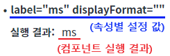
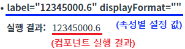
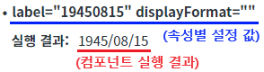
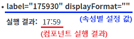

[Textbox] 데이터 타입 설정에 따른 출력 값 비교하기
1개요
속성 'dataType'의 설정 값에 따른 비교 예제입니다. 이 속성은 컴포넌트의 값(속성 'label'의 설정 값)을 화면에 표시할 때, 서식을 적용하기 위해 사용합니다. 서식은 속성 'displayFormat'의 설정 값을 참조하여 적용됩니다. 속성 'displayFormat'의 설정 값이 없는 경우, 속성 'dataType'의 설정 값에 따라 기본 서식이 설정된 경우도 있습니다.
속성 'dataType'의 설정 값에 따른 기능은 아래와 같습니다.
"text" : 문자열.
"number" : 숫자 형식의 문자열.
"date" : 날짜 형식의 문자열. 기본 서식은 'yyyy/MM/dd'입니다.
"time" : 시간 형식의 문자열. 기본 서식은 'HH:mm'입니다.
컴포넌트의 값(속성 'label'의 설정 값)은 서식이 적용되지 않은 설정 값이 할당됩니다.
서식이 적용된 값은 함수 'getFormatValue'를 통해 반환받을 수 있습니다.
2구현된 기능
'dataType'의 설정 값이 'text'인 경우의 출력 예시
'dataType'의 설정 값이 'number'인 경우의 출력 예시
'dataType'의 설정 값이 'date'인 경우의 출력 예시
'dataType'의 설정 값이 'time'인 경우의 출력 예시
3예제 테스트 방법
3.1'dataType'의 설정 값이 'text'인 경우의 출력 예시
STEP 1. 초기 상태를 확인합니다.
예제 영역 '(기본 설정 값) dataType="text"'의 출력 값을 확인합니다.
별도의 조작은 없으며, 화면에 출력된 속성 'dataType', 'label', 'displayFormat'의 설정 값에 따른 실행 결과를 비교합니다.그림 1.브라우저(Chrome) 실행 예시 - 구성 예시

STEP 2. 실행 결과를 확인합니다.
설정 속성 별 실행 결과
예시 1) 속성: dataType="text" label="ms" displayFormat="" 설명: 기본 서식이 지정되어 있지 않아 값이 그대로 출력됩니다. 실행 결과: ms 예시 2) 속성: dataType="text" label="ms" displayFormat="(단위: ##)" 설명: 속성 'label'의 설정 값의 문자열 길이가 고정일 때 '#'을 사용하여 서식을 지정할 수 있습니다. 컴포넌트 값(문자열)의 길이가 2이기 때문에 '##'으로 설정되었습니다. 실행 결과: (단위: ms) 예시 3) 속성: dataType="text" label="12345000" displayFormat="#,###" 설명: 3자리 마다 ','를 출력하려면 속성 'dataType'의 설정 값을 'number'로 지정해야 합니다. 실행 결과: 12345,000
3.2'dataType'의 설정 값이 'number'인 경우의 출력 예시
STEP 1. 초기 상태를 확인합니다.
예제 영역 '(기본 설정 값) dataType="text"'의 출력 값을 확인합니다.
별도의 조작은 없으며, 화면에 출력된 속성 'dataType', 'label', 'displayFormat'의 설정 값에 따른 실행 결과를 비교합니다.그림 2.브라우저(Chrome) 실행 예시 - 구성 예시

STEP 2. 실행 결과를 확인합니다.
설정 속성 별 실행 결과
예시 1) 속성: dataType="number" label="12345000.6" displayFormat="" 설명: 기본 서식이 지정되어 있지 않아 값이 그대로 출력됩니다. 실행 결과: 12345000.6 예시 2) 속성: dataType="number" label="12345000.6" displayFormat="#,###" 설명: 'displayFormat'에 소수점 서식이 포함되지 않았습니다. 소수점은 반올림되어 출력됩니다. 실행 결과: 12,345,001 예시 3) 속성: dataType="number" label="12345000.6" displayFormat="#,###.#0" 설명: 'displayFormat'에 소수점 서식이 포함되어 있습니다. 소수점 2번째 자리까지 표시합니다. 실행 결과: 12,345,000.60 예시 4) 속성: dataType="number" label="12345000.6" displayFormat="#,###[floor]" 설명: 'displayFormat'에 소수점 내림 서식이 포함되어 있습니다.(round: 반올링, ceil: 올림, floor: 내림) 실행 결과: 12,345,000 예시 5) 속성: dataType="number" label="12345000" displayFormat="#,### byte" 설명: 'displayFormat'에 'postfix'가 포함되어 있습니다. 실행 결과: 12,345,000 byte
3.3'dataType'의 설정 값이 'date'인 경우의 출력 예시
STEP 1. 초기 상태를 확인합니다.
예제 영역 'dataType="date"'의 출력 값을 확인합니다.
별도의 조작은 없으며, 화면에 출력된 속성 'dataType', 'label', 'displayFormat'의 설정 값에 따른 실행 결과를 비교합니다.그림 3.브라우저(Chrome) 실행 예시 - 구성 예시

STEP 2. 실행 결과를 확인합니다.
설정 속성 별 실행 결과
예시 1) 속성: dataType="date" label="19450815" displayFormat="" 설명: 'displayFormat'의 설정 값이 정의되지 않아 기본 서식(yyyy/MM/dd)이 적용되어 출력됩니다. 실행 결과: 1945/08/15 예시 2) 속성: dataType="date" label="19450815" displayFormat="yyyy-MM-dd" 설명: 'displayFormat'의 설정 값이 적용되어 출력됩니다. 실행 결과: 1945-08-15 예시 3) 속성: dataType="date" label="19450815" displayFormat="MM-dd yyyy" 설명: 'displayFormat'의 설정 값이 적용되어 출력됩니다. 컴포넌트 값의 문자열 순서는 'yyyyMMdd'으로 계산됩니다. 실행 결과: 08-15 1945
3.4'dataType'의 설정 값이 'time인 경우의 출력 예시
STEP 1. 초기 상태를 확인합니다.
예제 영역 'dataType="time"'의 출력 값을 확인합니다.
별도의 조작은 없으며, 화면에 출력된 속성 'dataType', 'label', 'displayFormat'의 설정 값에 따른 실행 결과를 비교합니다.그림 4.브라우저(Chrome) 실행 예시 - 구성 예시

STEP 2. 실행 결과를 확인합니다.
설정 속성 별 실행 결과
예시 1) 속성: dataType="time" label="175930" displayFormat="" 설명: 'displayFormat'의 설정 값이 정의되지 않아 기본 서식(HH:mm)이 적용되고, 값의 마지막 2자리가 제외되어 출력됩니다. 컴포넌트 값(문자열)의 순서는 'HHmmss'으로 계산됩니다. 실행 결과: 17:59 예시 2) 속성: dataType="time" label="175930" displayFormat="HH:mm" 설명: 'displayFormat'의 설정 값이 적용되어 출력됩니다. 컴포넌트 값(문자열)의 순서는 'HHmmss'으로 계산됩니다. 실행 결과: 17:59 예시 3) 속성: dataType="time" label="175930" displayFormat="HH:mm:ss" 설명: 'displayFormat'의 설정 값이 적용되어 출력됩니다. 컴포넌트 값(문자열)의 순서는 'HHmmss'으로 계산됩니다. 실행 결과: 17:59:30
4구현 예시
4.1속성으로 데이터 타입 설정하기
속성을 정의합니다.
[필수] dataType="옵션 값"
(옵션)
- "text" : 문자열.
- "number" : 숫자 형식의 문자열.
- "date" : 날짜 형식의 문자열. 기본 서식은 'yyyy/MM/dd'입니다.
- "time" : 시간 형식의 문자열. 기본 서식은 'HH:mm'입니다.
(예시)
예시) dataType="number"
세부 예시는 이 문서의 '예제 테스트 방법'을 참고합니다.
[선택] displayFormat="서식 문자열"
속성 'dataType'의 설정 값에 따라 적용됩니다. Excel의 서식과 흡사합니다.
(예시)
예시) displayFormat="#,###" dataType="number"
세부 예시는 이 문서의 '예제 테스트 방법'을 참고합니다.
그림 5.웹스퀘어5 SP5 스튜디오의 Property View(속성창) 예시

소스 코드
<!-- Textbox의 소스 본문 예시 --> <w2:textbox dataType="number" displayFormat="#,###"></w2:textbox>
5주요 API
dataType
displayFormat
6참고 문서
[웹스퀘어5 SP5 개발 가이드] Textbox
링크 : https://docs1.inswave.com/sp5_user_guide/8df43d1f59fab704#b03eab79a0d8f148